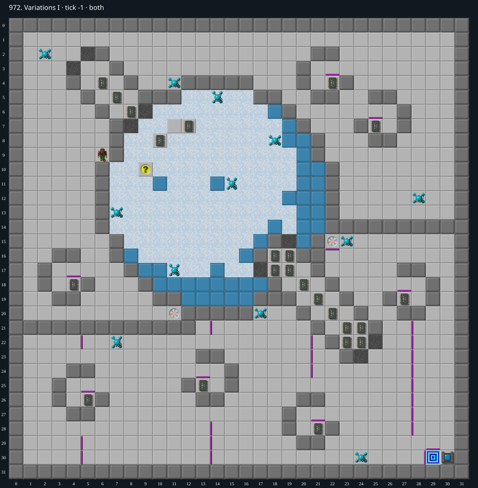

Jacques · Original Tile World MS
972. Variations I
Impossibility argumentThe required chip at (10,8) can be collected, but doing so consumes the only ice pivot and traps Chip permanently in a closed cross.
23 chips required · 300 second time limit
Why completion is impossible
- All 23 chips are required, including (10,8); the only exit is outside the ice cross, behind its socket.
- The horizontal track through (10,8) consists of plain ice at x=8..18 in row 8 and is sealed at both ends by permanent walls at (7,8) and (19,8). The vertical track consists of x=10, y=6..16 and is sealed at (10,5) and (10,17).
- Apart from the chip itself, the only possible stopping point in these tracks is the fake blue wall at (10,11), which hides Ice. Any first approach to the chip must use this one-time pivot; otherwise neither track has a point where Chip can first turn toward the chip.
- Native MS pops the fake wall on arrival and permits a turn based on the encountered fake-wall tile. This makes the chip collectable, but permanently consumes the pivot and exposes plain ice at (10,11).
- After collecting (10,8), its empty floor is the only remaining stopping point in the cross. Each of four departures slides to a permanent end wall and reverses along the same axis, returning to the chip cell. Manual input cannot turn on plain ice, including after a blocked move.
- No skates, ice corners, blocks or teleports occur in the cross. Walkers cannot create a safe perpendicular turn or remove the end walls; contact can only obstruct or kill Chip. Chip therefore cannot escape the 21-cell cross to the exit after collecting this mandatory chip.
Inspect both layers
The main map shows the initial runtime state. Switch to the buried layer to inspect hidden terrain and items. Hover coordinates are also available in the downloadable SVG.


Recorded checks and attempts
- data audit: Decoded both 1024-cell DAT planes and exact level metadata; initialized production MS runtime and rendered actual game sprites.
- structural proof audit: Asserted both tracks, their permanent end walls, the fake wall hiding Ice, absence of skates/corners/blocks, exact required-chip count and exit barriers in prove-ice-trap.ts.
- scope note: Native partial-run witness is for the identical trap geometry in974. The972 conclusion is a structural/source proof, not an assertion that its entire level was replayed to completion.